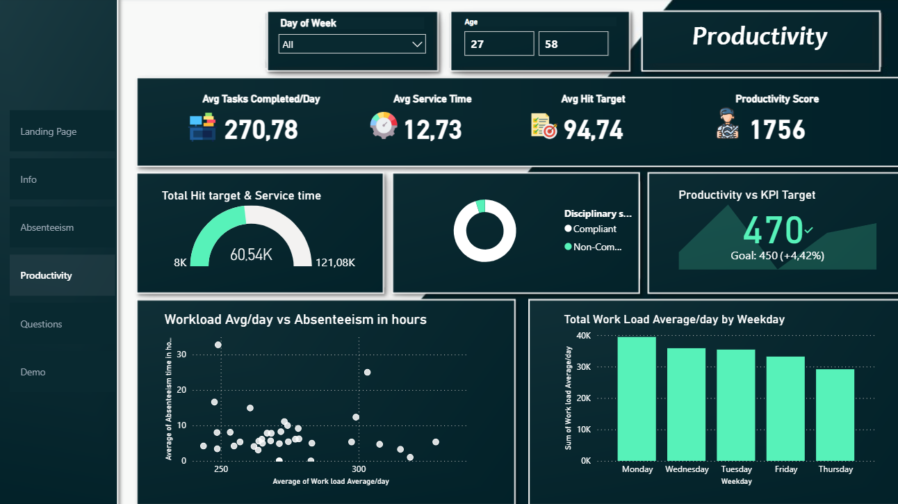
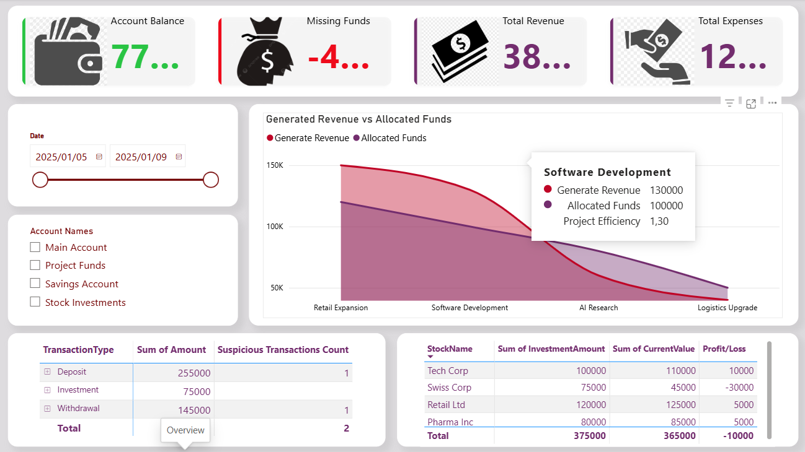

Based in Johannesburg, South Africa, I work at the intersection of data science, workforce analytics and programme operations, turning complex data into clear analysis, automated systems and decisions that move work forward.
With four years of continuous, hands-on experience, my work spans applied statistics, statistical modelling, SQL, Python, business intelligence, data visualisation and Google Cloud automation. My background in Industrial & Organisational Psychology, coupled with my current Honours studies at UNISA, brings a human-centred perspective to the way I analyse people, performance and organisational data.
My day-to-day work sits at the intersection of program operations and applied data science. I build automated analytics pipelines and business intelligence dashboards that program teams rely on for day-to-day decision-making, demonstrating my commitment to supporting team success, while maintaining and extending my statistical and machine-learning practice through dedicated data science projects.
This portfolio reflects both sides of that work: production analytics and applied data science, from operational reporting and automation to statistical analysis, machine learning and data visualisation.
A tool that predicts which learners are likely to disengage or drop out before it happens, so program teams can step in early. Built with machine learning trained on patterns like inactivity, quiz completion, and how quickly someone gets started, so support reaches the people who need it most.
View notebookAn automated system that replaces hours of manual spreadsheet work with dashboards that update themselves. It tracks learner pacing, payments, and progress across multiple training programs at once, saving the team real time every day.
View writeupA recurring analysis that answers the questions program managers actually ask: who is falling behind, who is at risk of dropping off, and whether different learner groups are being served fairly. Turns raw activity data into clear, usable answers.
View writeupA case study analysing water access across a country's provinces and towns, showing how raw records can be joined, cleaned, and ranked to reveal where infrastructure investment is needed most, then presented as an interactive map-based dashboard.
View SQL
A three-page dashboard that helps HR and people teams understand employee absenteeism and productivity: who is affected, why, and how workload relates to time away from work, so leaders can make better staffing and wellbeing decisions.
View writeup
A hands-on teaching dashboard designed from scratch to help learners practice real business intelligence skills, built around a company-financials scenario I created specifically for training purposes.
View writeup